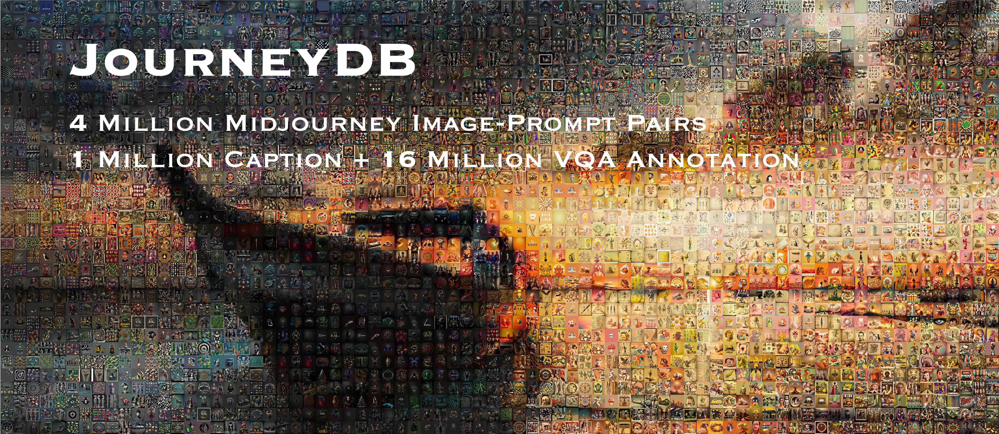
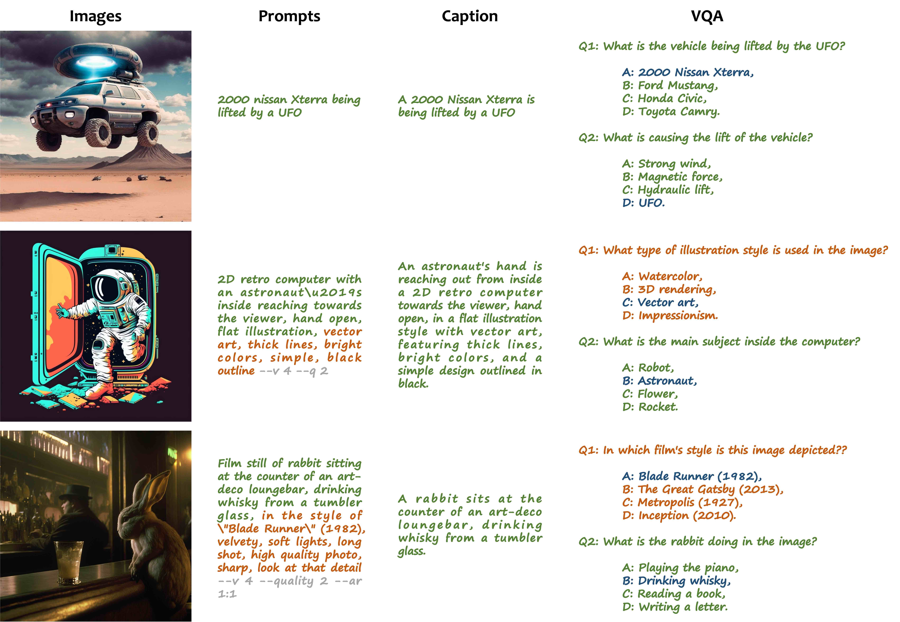
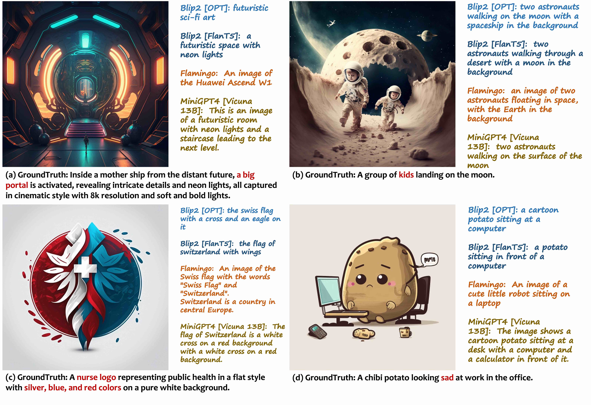
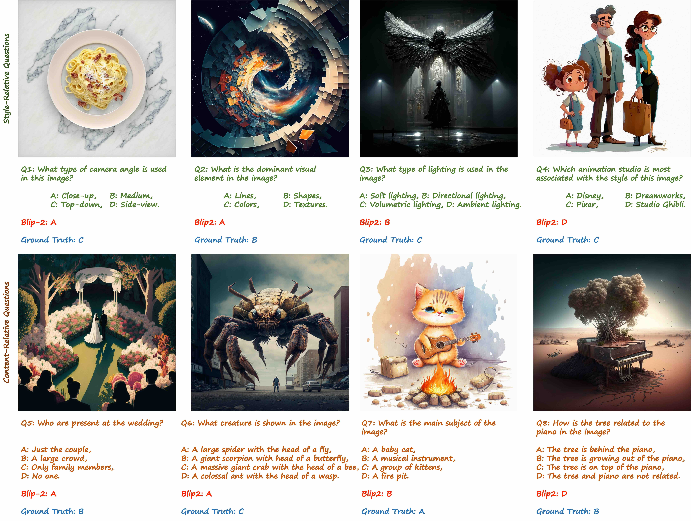

we present a large-scale dataset, JourneyDB, for multi-modal visual understanding in the realm of generative images.
JourneyDB is a large-scale generated image understanding dataset that contains 4,429,295 high-resolution Midjourney images, annotated with corresponding text prompt, image caption, and visual question answering.
With the vast exploration space offered by JourneyDB, we carefully set up four evaluation tracks: a) Prompt Inversion, b) Style Retrieval, c) Image Caption, and d) Visual Question Answering.
As illustrated in Figure 1, for each image instance, we acquire the corresponding text prompts used to generate the images with Midjourney. Furhtermore, we employ the GPT3.5 to generate the caption and VAQ groundtruth.
Figure 1. Data Collection Procedure.
We provide several examples to show the contents of each instance of the dataset in Figure 2.
Figure 2. Samples of JourneyDB.
We provide detailed statistics for each split subset in the Table 1. We randomly split the whole dataset into roughly 20:1 to obtain the training and validation set. The training set contains 4,189,737 labeled images and 1,385,317 labeled prompts. The validation set contains 235,156 images and 82,093 prompts. And we additionally sample a testing set for manual filtering. The testing set contains 5,402 images and 5,171 prompts.
| Image | Prompt | Labeled Image | Labeled Prompt | Style QA | Content QA | |
|---|---|---|---|---|---|---|
| Training Set | 4,453,193 | 1,643,375 | 4,189,737 | 1,385,317 | 7,056,394 | 8,775,971 |
| Validation Set | 234,156 | 82,093 | 234,156 | 82,093 | 311,569 | 374,310 |
| Testing Set | 5,402 | 5,171 | 5,402 | 5,171 | 10,040 | 11,369 |
| Total | 4,692,751 | 1,730,639 | 4,429,295 | 1,472,581 | 7,378,003 | 9,161,650 |
Table 1. Data Split Statistics.
With the proposed dataset, we set up the task: prompt inversion, which takes a single image and predicts the corresponding prompts. we set up a benchmark for the zero-shot prompt inversion task, where we leverage state-of-the-art multi-modal models. We adjust different prompts for each model to help them perform their best in this novel task. We evaluate these models on the test set of our model, and the results are presented in Table 2. In the experiment, we notice that the existing models find it hard to capture the details and the style-relevant information about the input image, and do not perform as well as in traditional datasets.
| Mode | Models | Validation | Test | ||||||||||
|---|---|---|---|---|---|---|---|---|---|---|---|---|---|
| BLEU-4 | METEOR | ROUGE-L | CIDEr | Similarity | BLEU-4 | METEOR | ROUGE-L | CIDEr | Similarity | QASs | QASc | ||
| ZeroShot | BLIP-2 OPT | 0.18 | 2.39 | 6.75 | 5.42 | 0.36 | 0.29 | 2.85 | 7.06 | 6.46 | 0.36 | 12.42% | 18.55% |
| BLIP-2 FlanT5 | 0.27 | 2.46 | 7.19 | 6.88 | 0.38 | 0.4 | 2.95 | 7.69 | 8.86 | 0.37 | 13.79% | 18.58% | |
| MiniGPT-4 | 1.49 | 5.5 | 12.51 | 10.39 | 0.43 | 1.71 | 6.51 | 13.13 | 11.4 | 0.43 | 17.12% | 26.79% | |
| Uni-Perceiver v2 | 0.23 | 2.44 | 9.11 | 12.38 | 0.33 | 0.37 | 2.73 | 9.88 | 15.45 | 0.34 | 12.43% | 18.49% | |
| Finetune | Uni-Perceiver v2 | 20.6 | 16.9 | 29.1 | 123.2 | 0.59 | 4.68 | 8.56 | 16.98 | 34.01 | 0.51 | 19.71% | 24.84% |
Table 2. Prompt Inversion. The existing models find it hard to capture the details and the style-relevant information about the input image, and do not perform as well as in traditional datasets.
Considering the huge style space, recognizing the style of a given image is super challenging, even for human beings. Therefore, style retrieval is desired to help people better understand the style of a given image. Retrieving a style prompt directly from a super large number of candidates is sophisticated and timeconsuming. Hence we cluster the style prompts into 344 categories, including, camera parameters, lighting, artist style, colour schemes, etc., as introduced in Section 3.2, and do the style prompt retrieval in each category, which significantly narrows the searching space. To set up the benchmark, we employ CLIP to perform a zero-shot style retrieval evaluation. The results are shown in Table 5. We notice the retrieval in the overall style prompts space results in super low recall. And the model performs much better when retrieving on the per-category sub-space.
| Method | Validation | Test | ||
|---|---|---|---|---|
| Over-All | Per-Category | Overall | Per-Category | |
| CLIP-ViT-L/14 | 0.65% | 41.72% | 47.00% | 41.33% |
Table 3. Style Retrieval. The model performs much better when retrieving on the per-category sub-space.
Image captioning asks a multi-modal model to generate a text description for the visual content of an image. Compared to existing image captioning benchmarks (COCO Caption, etc.), JourneyDB includes both in-detail descriptions and high-level summarizations of images, assessing the model’s capability of finegrained recognition and holistic understanding. We evaluate existing multi-modal models on the image captioning sub-task of JourneyDB. The results are demonstrated in Figure 3, indicating that providing good descriptions for AI-generated contents is challenging for multi-modal models trained on natural images.
Figure 3. Image Caption. The examples show that existing multi-modal models failed to recognize some key concepts from the AI-generated images.
JourneyDB consists of images with abundant and diverse prompts, which describe not only the stylistic attributes but also the visual contents of the generated images. Given the prompts of the images, we construct two tasks of multiple-choice visual question answering (MC-VQA) to evaluate the model’s ability for comprehending the style and content of generative data respectively. The evaluation results of the content-relevant and style-relevant zero-shot multiple-choice visual question answering are shown in Figure 4. We can observe that the performance of the existing multimodal models are far away from satisfactory on both the content-relevant and style-relevant MC-VQA.
Figure 4. Visual Question Answering.
Please fill in the form to acquire the download link.
The JourneyDB dataset is available under the customized Terms of Usage.